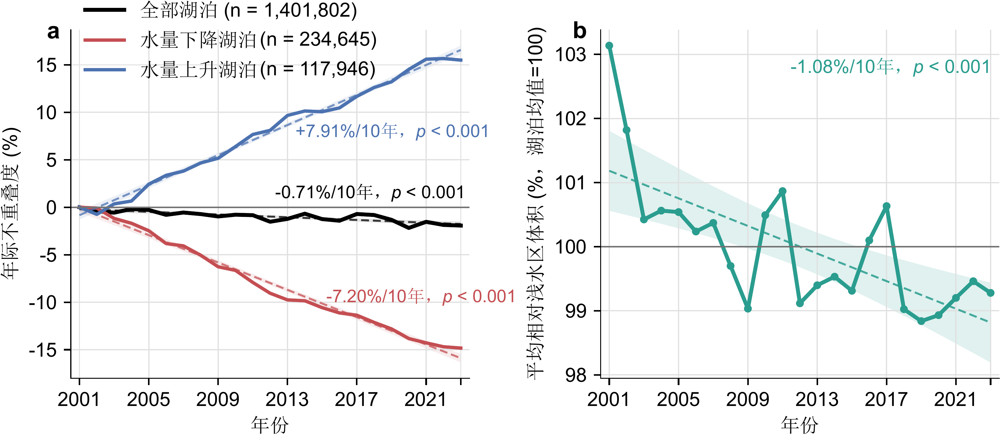
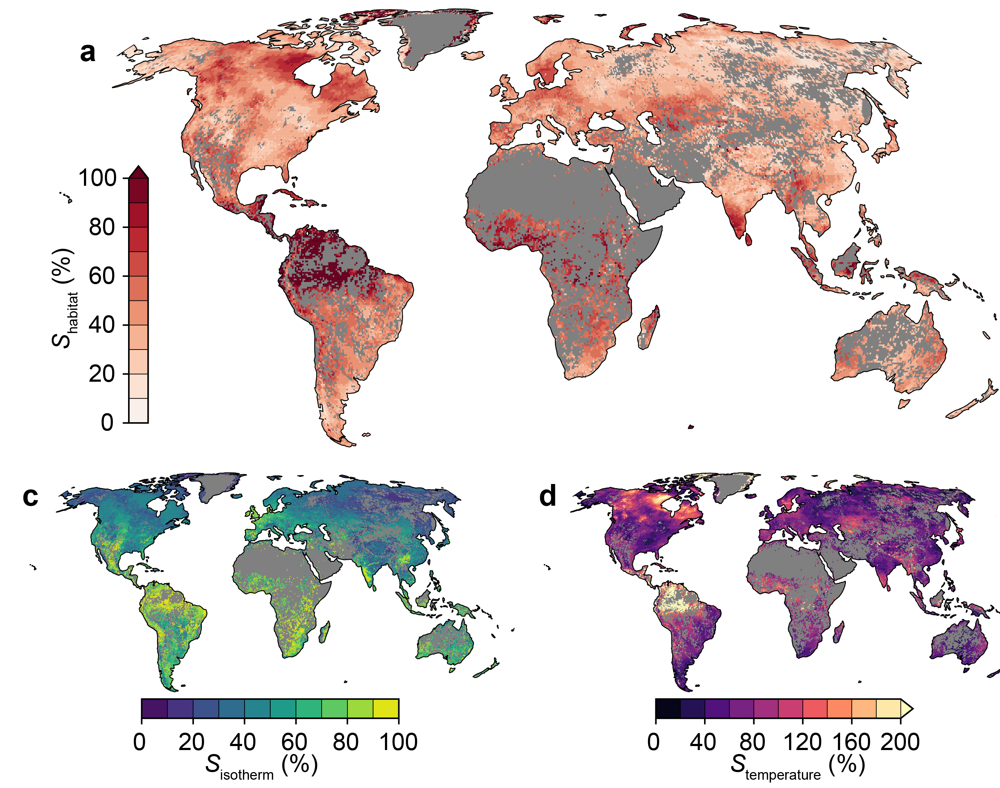
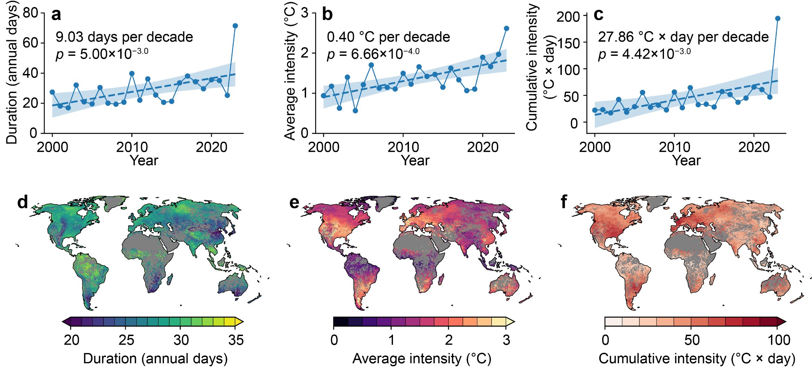

Water storage and littoral-zone change
I reconstruct lake water storage and quantify how long-term and seasonal water changes reshape littoral-zone space, including habitat compression and spatial mismatch.

Hydrology | Remote Sensing | Climate Impacts
I study how lake water quantity, temperature, and hydro-climatic extremes are changing globally, and what those changes mean for littoral zones, thermal habitats, and freshwater systems.
Research
My work combines satellite observations, hydrological predictors, thermodynamic lake models, machine learning, validation datasets, and high-performance geospatial workflows.

I reconstruct lake water storage and quantify how long-term and seasonal water changes reshape littoral-zone space, including habitat compression and spatial mismatch.
I reconstruct daily lake temperature profiles and develop indicators that connect warming, isotherm displacement, and thermal habitat change across climate zones.

I analyze lake heatwaves and compound high-temperature, low-water events to understand short-term stressors that can exceed long-term trend effects.
Profile
I am interested in interdisciplinary lake science that links physical dynamics, climate extremes, water quality, and ecological or societal impacts.
Dissertation: Hydrological and Thermal Dynamics of Global Lakes and Their Impacts on Littoral Zones and Thermal Habitats.
Global lake hydro-thermal reconstruction, reservoir storage monitoring, groundwater downscaling, and lake ice collaboration.
Teaching assistant for Theories and Applications of Remote Sensing and Remote Sensing Hydrology.
Selected publications
Wang, Y., Long, D., Li, X., Li, L., Scanlon, B. R., and Woolway, R. I. Nature Geoscience, under review.
Li, L., Long, D., Wang, Y., and Woolway, R. I. Nature, 642, 361-368.
doi:10.1038/s41586-025-09046-3Wang, Y., Long, D., and Li, X. Remote Sensing of Environment, 292, 113575.
doi:10.1016/j.rse.2023.113575Wang, Y., Li, C., Cui, Y., Cui, Y., Xu, Y., Hora, T., Zaveri, E., Rodella, A.-S., Bai, L., and Long, D. Journal of Hydrology, 640, 131708.
doi:10.1016/j.jhydrol.2024.131708Zhao, F., Long, D., Fang, C., Wang, Y., and Duan, X. The Cryosphere, 20, 2143-2167.
doi:10.5194/tc-20-2143-2026Contact
I am especially interested in global lake change, lake thermal habitats, water-quality implications, lake ice and phenology, and freshwater ecosystem stressors.